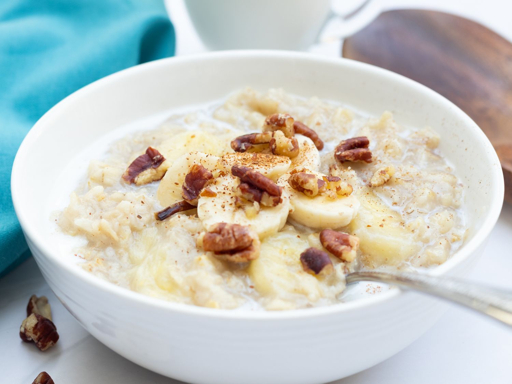
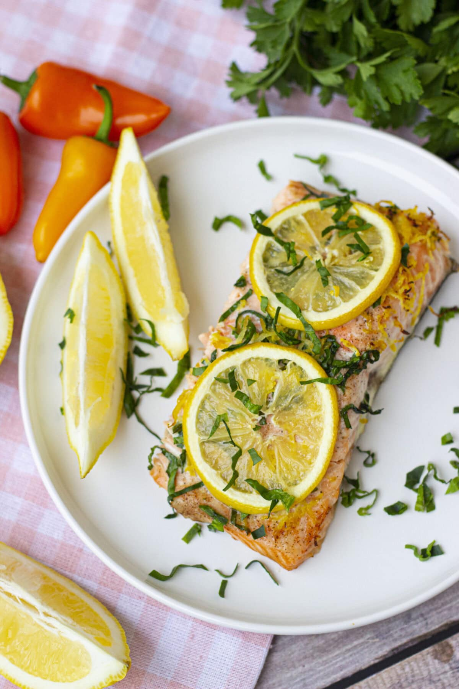

Breakfast Recipes

Banana Pancakes
Quick and healthy banana pancakes made in your TM6.
Ingredients:
- 2 ripe bananas
- 2 eggs
- 1/2 cup oats
- 1 tsp baking powder
Instructions:
- Blend all ingredients in TM6 until smooth.
- Pour batter onto a heated non-stick pan.
- Cook each side for 2-3 minutes until golden.
- Serve with fruits or syrup.

Oatmeal Porridge
Creamy oatmeal porridge with fruits and nuts.
Ingredients:
- 1 cup oats
- 2 cups milk or water
- 1 tbsp honey
- Fruits and nuts for topping
Instructions:
- Add oats and milk/water to TM6 bowl.
- Cook for 8-10 min at 90°C, speed 2.
- Stir in honey and top with fruits/nuts.
Lunch Recipes

Chicken Curry
Delicious chicken curry cooked perfectly in your TM6.
Ingredients:
- 500g chicken
- 1 onion, chopped
- 2 cloves garlic
- 200ml coconut milk
- Curry spices
Instructions:
- Chop onion and garlic in TM6, speed 5, 5 sec.
- Add chicken and spices, cook 10 min, 100°C, reverse speed 1.
- Add coconut milk, cook 10 min, 100°C, reverse speed 1.
- Serve hot with rice or bread.
Dinner Recipes

Salmon with Lemon
Juicy salmon fillets with a zesty lemon sauce.
Ingredients:
- 2 salmon fillets
- 1 lemon
- 1 tbsp olive oil
- Salt and pepper
Instructions:
- Season salmon with salt, pepper, and lemon juice.
- Cook in TM6 Varoma for 15 min.
- Drizzle with olive oil before serving.
Desserts

Chocolate Mousse
Rich and creamy chocolate mousse.
Ingredients:
- 100g dark chocolate
- 3 eggs, separated
- 1 tbsp sugar
- 100ml cream
Instructions:
- Melt chocolate in TM6, 50°C, 3 min, speed 2.
- Whip egg whites with sugar until stiff peaks form.
- Fold in whipped cream and chocolate.
- Chill in fridge for 2 hours before serving.